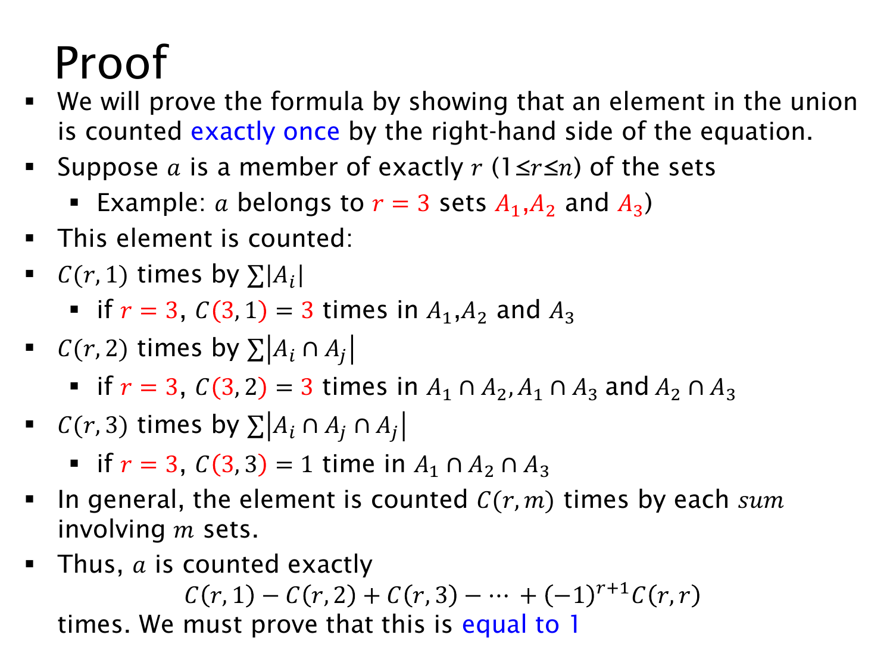

L1.8 · 第 8 页讲解原文
查看这一页课件

容斥证明：追踪一个元素被数几次
为了证明公式，不必逐个计算所有交集。只要证明：并集中的任意元素在右边的净计数都是 1。
取一个元素 a，假设它恰好属于 r 个集合，其中 1≤r≤n。这里 n 是集合总数，r 是实际包含这个元素的集合数，两者不一定相同。
在所有单集合大小之和中，a 被数 r=(1r) 次。
在全部两重交集大小之和中，要让交集包含 a，必须从那 r 个含有 a 的集合中选两个，因此有 (2r) 项包含它。这一层带负号，所以减去 (2r) 次。
同理，三重交集层中有 (3r) 项包含它，带正号；一般的 m 重交集层中有 (mr) 项包含它。当 m>r 时，没有这么多含有 a 的集合可选，贡献就是 0。
例如 a 只属于 A1,A2,A3：单集合层加 3 次，两重交集 A1∩A2、A1∩A3、A2∩A3 共减 3 次，三重交集再加 1 次，得到 3−3+1=1。
对一般的 r，净次数是
(1r)−(2r)+(3r)−⋯+(−1)r+1(rr).
因此，集合计数问题已经转化为一个二项式系数恒等式：证明这个交替和等于 1。利用二项式定理，
0=(1−1)r=1−(1r)+(2r)−⋯+(−1)r(rr),
把常数项移到另一边就得到所需结论。并集外的元素不属于任何集合，在每一项中都贡献 0，所以也不会被误计。
课件三重交集那一行写成了 Ai∩Aj∩Aj，最后一个下标是笔误；此处应理解为三个不同集合 Ai∩Aj∩Ak。下方的 A1∩A2∩A3 例子体现了正确含义。